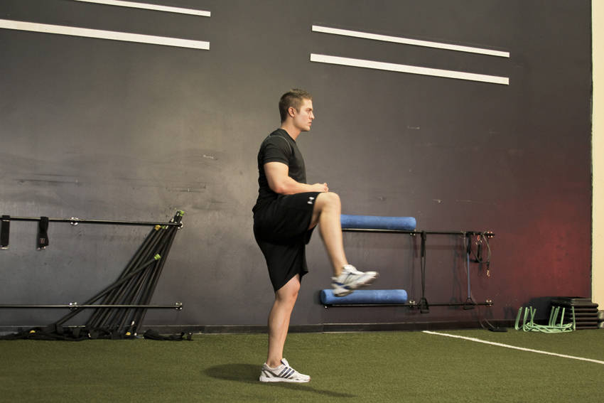

- Begin standing on one leg, holding to a vertical support.
- Raise the unsupported knee to 90 degrees. This will be your starting position.
- Open the hip as far as possible, attempting to make a big circle with your knee.
- Perform this movement slowly for a number of repetitions, and repeat on the other side.